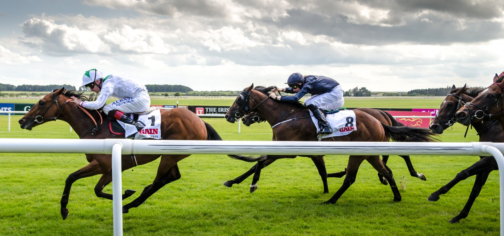

Lapothéose busca en el Prix du Conseil de Paris la revancha del Vermeille
El Prix du Conseil de Paris (Grupo II, 2.200 metros) centra este domingo, a las 15.50, la última reunión del año en ParisLongchamp, con Lapothéose al frente de un lote de mucho nivel.

Yann Barberot ha señalado esta carrera como el objetivo de fin de año de Lapothéose. La yegua llega tras acabar última en el Qatar Prix Vermeille (Grupo I) el 6 de septiembre, un borrón en una campaña en la que se había impuesto en el Camille Pissarro Coolmore Prix Saint-Alary (Grupo II) y había sido segunda en el Preis der Diana (Grupo I), el Diana alemán.
Zaraki trae una trayectoria reciente muy parecida. Ganó con enorme facilidad The Aga Khan Studs Prix Nureyev (Listed) y después decepcionó en las pruebas preparatorias del Arc, donde fue último del Qatar Prix Niel (Grupo II). Este castrado, preparado por André y Lavinia Fabre, defiende los colores de Wertheimer & Frère. La cuadra presenta también a Sinéleo y Nitoi, que salen de la misma preparación.
Dos de los nombres con más peso del lote, Lapothéose y Zaraki, llegan así con un último puesto como referencia más reciente.
En la lista figura también Best Secret, de Wathnan Racing y entrenado por Stéphane Wattel. En junio no desentonó en Royal Ascot en un Hardwicke Stakes (Grupo II) de mucho nivel.
La tarde sigue con dos Listed reservadas a hembras. A las 16.25 se corre el Prix Casimir Delamarre, sobre 1.800 metros y abierto a ejemplares de tres años en adelante. Allí Pierchic, preparada por Henri-Alex Pantall, debería partir como favorita.
A las 17.00 llega el Prix de Saint-Cyr, para potrancas de tres años sobre 1.400 metros. Reunió 16 inscripciones, varias de ellas llegadas desde el otro lado del Canal de la Mancha.
Por Martín Larrañeta